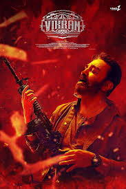

|

|
-
Vikram is a 2022 Indian Tamil-language action thriller film[8] directed by Lokesh Kanagaraj and produced by Raaj Kamal Films International. The film stars Kamal Haasan in the titular role, alongside Vijay Sethupathi, Fahadh Faasil, Narain, Kalidas Jayaram, Gayathrie, Chemban Vinod Jose, Santhana Bharathi and Elango Kumaravel. It is the second instalment in the Lokesh Cinematic Universe and is a spiritual successor to the 1986 film of the same name. The film follows Vikram, a former commander of the black-ops squad's pilot batch, and his efforts to take down Sandhanam, the runner of a drug syndicate Vetti Vagaiyara.
|